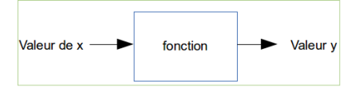
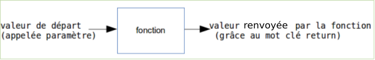

Cours
1) Programmer un ordinateur, c'est quoi ?
Programmer un ordinateur, c'est quoi ? Programmer, c'est créer des programmes (suite d'instructions données à l'ordinateur) ! Un ordinateur sans programme ne sait rien faire. Il existe différents langages qui permettent de programmer un ordinateur, mais le seul directement utilisable par le processeur est le langage machine (suite de 1 et de 0). Aujourd'hui (presque) plus personne ne programme en langage machine (trop compliqué).
Les informaticiens utilisent des instructions (mots souvent en anglais) en lieu et place de la suite de 0 et de 1. Ces instructions, une fois écrites par le programmeur, sont "traduites" en langage machine. Un programme spécialisé assure cette traduction. Ce système de traduction s'appellera interpréteur ou bien compilateur, suivant la méthode utilisée pour effectuer la traduction.
Il existe 2 grandes familles de langages de programmation :
-
Les langages de bas niveau sont très complexes à utiliser, car très éloignés du langage naturel, on dit que ce sont des langages « proches de la machine », en contrepartie ils permettent de faire des programmes très rapides à l'exécution. L'assembleur est le langage de bas niveau. Certains "morceaux" de programmes sont écrits en assembleur encore aujourd'hui.
-
Les langages de haut niveau sont eux plus "faciles" à utiliser, car plus proches du langage naturel (exemple : si a=3 alors b=c). Exemples de langages de haut niveau : C, C++ , Java, Python...
En NSI, notre langage de prédilection sera Python.
2) Notion de variable
Définition du mot ordinateur d'après "Le Petit Larousse" :
"Machine automatique de traitement de l'information, obéissant à des programmes formés par des suites d'opérations arithmétiques et logiques."
Qui dit "traitement de l'information", dit donc données à manipuler. Un programme "passe" donc son temps à traiter des données. Pour pouvoir traiter ces données, l'ordinateur doit les ranger dans sa mémoire (RAM - Random Access Memory). La RAM se compose de cases dans lesquelles nous allons ranger ces données (une donnée dans une case). Chaque case a une adresse (ce qui permet au processeur de savoir où sont rangées les données).
Alors, qu'est-ce qu'une variable ?
Eh bien, c'est une petite information (une donnée) temporaire que l'on stocke dans une case de la RAM. On dit qu'elle est "variable", car c'est une valeur qui peut changer pendant le déroulement du programme.
Une variable est constituée de 2 choses :
-
une valeur présente en mémoire (par exemple le nombre entier 5)
-
un nom
On dira donc qu'une variable est l'association d'un nom et d'une valeur
i = 12
Il est aussi possible d'associer un nom à un nombre à virgule :
i = 5.2
Un nom peut donc être associé à plusieurs types d'entités (pour l'instant nous n'en avons vu que deux, mais nous en verrons d'autres plus loin) : les nombres entiers ("integer" en anglais, abrégé en "int") et les nombres à virgule ("float" en anglais). Il est possible de connaitre le type de l'entité à l'aide de l'instruction "type".
a = 5
b = 5.4
3) un peu de calculs
Un ordinateur est bien évidemment capable d'effectuer des opérations mathématiques (arithmétiques).
Les signes utilisés sont classiques : +, - , * (multiplication), / (division), // (division euclidienne) ou encore % (modulo : reste d'une division euclidienne).
Il est tout à fait possible d'effectuer des opérations directement avec des nombres, mais il est aussi possible d'utiliser des variables.
a = 5
b = 16
c = 3.14 / 2
d = b / a
e = b // a
f = b % a
g = a + b
h = a
Considérons maintenant le programme suivant :
a = 11
a = a + 1
La réponse est 12.
Détaillons ce qui se passe dans ce programme :
Nous créons une variable : le nom a est associé à l'entier 11. La suite est un peu plus complexe, mais très importante à comprendre. Il va falloir lire la ligne a = a + 1 de droite à gauche, décortiquons cette ligne :
- a + 1 : nous prenons la valeur actuelle associée au nom a (c'est-à-dire 11) et nous ajoutons 1 à 11, à droite de l'égalité nous avons donc maintenant la valeur 12
- nous associons la valeur qui vient d'être calculée au nom a
Donc la valeur de a est bien 12
Ce raisonnement peut être généralisé pour éviter des erreurs parfois difficiles à corriger : dans une égalité, commencer toujours par évaluer l'expression se trouvant à droite du signe égal.
L'opération
a = a + 1
4) chaînes de caractères
a) notion de chaîne de caractères
On peut aussi associer des noms à des suites de caractères que l'on appelle "chaîne de caractères".
ma_chaine = "Bonjour le monde !"
Le contenu de la variable ma_chaine est de type string et donc un type(ma_chaine) donnera un str (abréviation de string en Python)
b) le signe + et les chaînes de caractères
L'utilisation du signe + ne se limite pas à l'addition. Il est aussi utilisé pour la concaténation.
D'après Wikipédia :
« Le terme concaténation (substantif féminin), du latin cum («avec») et catena(«chaîne, liaison»), désigne l'action de mettre bout à bout au moins deux chaînes. »
Si on considère le programme suivant :
a = "Hello"
b = "World"
mon_expression = a + b
Il est aussi possible de concaténer une chaîne de caractères et une ou plusieurs variables :
ma_chaine_1 = "Bonjour "
ma_chaine_2 = "le "
res = ma_chaine_1 + ma_chaine_2 + "monde!"
Les 2 noms ma_chaine_1 et ma_chaine_2 sont associés à 2 chaînes de caractères, nous avons donc bien ici une concaténation.
Que se passe-t-il si nous avons ce cas de figure :
a = "Nombre de pommes : "
b = 4
c = a + b
La solution : transformer le nombre 4 en caractère 4 à l'aide du mot clé str:
a = "Nombre de pommes : "
b = 4
c = a + str(b)
Autre solution pour faire cohabiter des variables de type int ou float avec des variables de type str : les fstring (attention les fstring sont uniquement disponible à partir de Python 3.5)
Il est possible d'écrire :
a = "Nombre de pommes :"
b = 4
c = f"{a} {b}"
Dans la chaîne de caractère, {a} sera remplacé par la valeur de la variable a, c'est à dire Nombre de pommes :. Même chose avec {b} qui sera remplacé par la valeur de b, c'est à dire 4.
autre exemple d'utilisation des fstring :
num_train = 4232
dest = "Paris"
c = f"Le train n°{num_train} à destination de {dest} entre en gare"
après l'exécution du programme ci-dessus, la variable c aura pour valeur "Le train n°4232 à destination de Paris entre en gare"
Notez la présence du "f" juste avant le guillemet et des accolades qui encadrent le nom de la variable. Il est nécessaire d'ajouter ce "f" pour avoir une fstring.
5) les fonctions
a) notion de fonction
Les fonctions permettent de décomposer un programme complexe en une série de sous-programmes plus simples. De plus, les fonctions sont réutilisables : si nous disposons d'une fonction capable de calculer une racine carrée, par exemple, nous pouvons l'utiliser un peu partout dans notre programme sans avoir à la réécrire à chaque fois (on parle de factorisation du code)
La notion de fonction en informatique est comparable à la notion de fonction en mathématiques.

Si nous avons y = 3x+2, pour une valeur donnée de x, nous aurons une valeur de y.
Exemple : x=4 donc y= 14 (y = 3.4+2=14, attention ici le point correspond au signe "multiplié").
La fonction en informatique est basée sur la même idée :

Voici la syntaxe employée en Python pour définir une fonction :
def nom_de_la_fonction(parametre):
instruction_1
instruction_2
return y
suite programme
La fonction renvoie la valeur associée à y.
ATTENTION : Notez bien la présence du décalage entre la première ligne et les lignes suivantes. Ce décalage est appelé indentation, l'indentation permet de définir un bloc de code. Dans l'exemple ci-dessus, l'indentation nous permet de savoir que "instruction_1", "instruction_2" et "return y" constituent un bloc de code, ce bloc correspond au contenu de la fonction. "suite programme" ne fait pas partie de la fonction, car il n'est pas indenté. Pour indenter du code, il y a 2 solutions : mettre 4 espaces ou utiliser une tabulation. En Python il est conseillé d'utiliser les 4 espaces, mais ce n'est pas une obligation. Une chose est sûre, une fois que vous avez choisi une méthode, n'en changé surtout pas au cours d'un même programme !
Codons notre exemple (y=3x+2) en créant une fonction ma_fonction :
def ma_fonction(x):
y = 3 * x + 2
return y
Si on considère cet exemple :
def ma_fonction(x):
y = 3 * x + 2
return y
solution = ma_fonction(4)
Après l'exécution de ce programme, la valeur de la variable solution sera 14. En effet, au moment de l'exécution de notre programme le code ma_fonction(4) sera systématiquement remplacé par la valeur renvoyée par la fonction. Dans notre exemple le ma_fonction(4) sera remplacé par le nombre 14, d'où la valeur 14 pour la variable solution.
Il est possible de passer plusieurs paramètres à une fonction :
def ma_fonction(x, b):
y = 2 * x + b
return y
solution = ma_fonction(4, 3)
Les paramètres peuvent être des chaînes de caractères (ainsi que la valeur retournée)
def dit_bonjour(nom, age):
phrase = f"Bonjour {nom}, vous avez {age} ans."
return phrase
p = dit_bonjour("toto", 16)
Attention : remarquez bien les guillemets autour du paramètre "toto" (c'est une chaîne de caractères)
b) les fonctions natives de python
Python propose des fonction prêtes à être utilisées par le programmeur : les fonctions natives (built-in function en anglais). Nous avons déjà eu l'occasion d'en voir deux avec type (qui renvoie le type d'une variable) et str qui renvoie la chaîne de caractère obtenue à partir d'un nombre (str(4) renvoie le caractère 4). Il existe beaucoup d'autres fonctions natives Python (il en existe plus de 50). Dans l'immédiat, nous allons en étudier deux autres :
-
la fonction len prend en paramètre une chaîne de caractères et renvoie le nombre de caractères présents dans cette chaîne de caractères (par exemple len("azerty") renvoie 5)
-
la fonction print permet d'afficher à l'écran la valeur qui lui est passée en paramètre.
c) les modules en Python
Il est possible d'utiliser d'autres fonctions "prêtes à l'emploi" en important des modules. Un module est un fichier contenant des fonctions qui pourront être utilisées dans d'autres programmes. Le module math est un module très important puisqu'il comporte toutes les fonctions mathématiques classiques : cosinus, sinus, exposant, racine carrée...
Pour utiliser les fonctions présentes dans un module, il est nécessaire d'importer le module dans notre programme. Par exemple, pour pouvoir utiliser les fonctions du module math il faudra écrire :
import math
Pour utiliser une fonction d'un module importé, il faudra préciser le nom du module qui propose cette fonction. Par exemple, pour déterminer le sinus de 3.14, il faudra écrire :
math.sin(3.14)
import math
a = 5
b = 16
c = 3.14
puis = math.pow(a,3)
racine = math.sqrt(b)
s = math.sin(c)
- la variable puis aura pour valeur 53 = 125
- la variable racine aura pour valeur 4 (racine carrée de 16)
- la variable s aura pour valeur 0.05 (le sinus de 3.14 est 0.05)
d) les fonctions et le mot clé return
Il est possible d'écrire une fonction sans utiliser le mot clé return, cette pratique est souvent considérée comme une "mauvaise pratique", mais Python ne renverra pas d'erreur si vous le faites. Le code suivant est tout à fait correct :
def ma_fonction(i):
d = 5
z = i + d
Pour information, même en l'absence de return, une fonction Python renvoie quand même "quelque chose", puisqu'elle renvoie None qui veut dire rien... Dans le cas ci-dessus nous aurons donc :
7) Variables locales et variables globales
a) variables et fonctions
Considérons le programme suivant:
def ma_fonc():
i = 5
ma_fonc()
print (i)
A la 3e ligne du programme, nous exécutons la fonction ma_fonc.
Rappelons que la fonction print permet d'afficher à l'écran la valeur qui lui est passée en paramètre. La 4e ligne de ce programme permet donc d'afficher la valeur de la variable i à l'écran.
On pourrait penser que ce programme va donc afficher 5 ! Pas du tout, nous avons le droit à l'erreur suivante :
NameError: name 'i' is not defined
Le message d'erreur est suffisamment parlant, inutile de s'attarder dessus : la variable i n'est pas définie. A noter que cette erreur est déclenchée par la 4e ligne (le print).
Pourquoi cette erreur, la variable i est bien définie dans la fonction ma_fonc et la fonction ma_fonc est bien exécutée, où est donc le problème ?
En fait, la variable i est une variable dite locale : elle a été définie dans une fonction et elle "restera" dans cette fonction. Une fois que l'exécution de la fonction sera terminée, la variable i sera "détruite" (supprimée de la mémoire). Elle n'est donc pas accessible depuis "l'extérieur" de la fonction (ce qui explique le message d'erreur que nous obtenons, car le print est en dehors la fonction ma_fonc, la variable i n'est donc plus accessible).
Étudions maintenant un cas un peu plus complexe :
i = 3
def ma_fonc():
i = 5
ma_fonc()
print (i)
En fait dans cet exemple nous avons 2 variables i différentes : la variable i "globale" (celle qui a été définie en dehors de toute fonction) et la variable i "locale" (celle qui a été définie dans la fonction). Ces 2 variables portent le même nom, mais sont différentes (elles correspondent à des cases mémoire différentes). Au moment de l'exécution du print à la 5e ligne seule la variable globale existe encore (celle définie à la première ligne du programme), d'où l'affichage du 3.
Une variable globale peut être "utilisée" à l'intérieur d'une fonction :
i = 3
def ma_fonc():
print (i)
ma_fonc()
Ce programme permet d'afficher la valeur 3 à l'écran.
Quand on cherche à utiliser une variable dans une fonction, le système va d'abord chercher si cette variable se "trouve" dans l'espace local de la fonction, puis, s'il ne la trouve pas dans cet espace local, le système va aller rechercher la variable dans l'espace global. Pour le print(i) situé dans la fonction le système ne trouve pas de variable i dans l'espace local de la fonction ma_fonc, il passe donc à l'espace global et trouve la variable i (nous avons donc 3 qui s'affiche).
Il est important de bien comprendre que dans la programme ci-dessous le système trouve une variable i dans l'espace local de la fonction, la "recherche" de la variable i se serait arrêtée là :
i = 3
def ma_fonc():
i = 5
print (i)
ma_fonc()
En revanche le programme ci-dessous génère une erreur : "UnboundLocalError: local variable 'i' referenced before assignment"
i = 3
def ma_fonc():
i = i + 1
ma_fonc()
print(i)
Il n'est à priori pas possible de modifier une variable globale (ici la variable i) dans une fonction.
Pour pouvoir modifier une variable globale dans une fonction, il faut utiliser le mot clé global :
i = 3
def ma_fonc():
global i
i = i + 1
ma_fonc()
print(i)
Je ne vais pas m'étendre sur l'utilisation du mot clé global car comme nous allons le voir maintenant, c'est une (très) mauvaise pratique, car cette utilisation peut entraîner des "effets de bord".
b) les effets de bord
On parle d'effet de bord quand une fonction modifie l'état d'une variable globale. Dans notre exemple ci-dessus, la fonction ma_fonc modifie bien la valeur de i : avant l'exécution de ma_fonc, i a la valeur 3, après l'exécution de la fonction ma_fonc, i est associé à la valeur 4. Nous avons donc bien un effet de bord.
Les effets de bord c'est "mal" ! Mais pourquoi est-ce "mal" ?
Les effets de bords provoquent parfois des comportements non désirés par le programmeur (évidemment dans des programmes très complexes, pas dans des cas simplistes comme celui que nous venons de voir). Ils rendent aussi parfois les programmes difficilement lisibles (difficilement compréhensibles). À cause des effets de bord, on risque de se retrouver avec des variables qui auront des valeurs qui n'étaient pas prévues par le programmeur. On dit aussi qu'à un instant donné, l'état futur des variables est difficilement prévisible à cause des effets de bord. En résumé, on évitera autant que possible l'utilisation du "global".
Un paradigme de programmation se propose d'éviter au maximum les effets de bords : la programmation fonctionnelle. Nous étudierons ce paradigme de programmation en terminale.
8) les expressions et les booléens
a) introduction
Si quelqu'un vous dit que "4 est égal à 5", vous lui répondez quoi ? "c'est faux". Si maintenant la même personne vous dit que "7 est égal à 7", vous lui répondrez bien évidemment que "c'est vrai".
En Python, ces deux "affirmations" ("4 est égal à 5" et "7 est égal à 7") s'écriront 4 == 5 et 7 == 7 (notez bien le double signe égal).
4 == 5 est appelé une expression, une expression est soit vraie (True comme 7 == 7), soit fausse (False comme 4 == 5).
Pour l'instant nous avons vu deux grands types de données : les nombres (entier ou flottant) et les chaînes de caractères, il existe un troisième type tout aussi important que les deux premiers : les booléens. Un booléen est un type de données qui ne peut prendre que deux valeurs : vrai (True) ou faux (False). Une expression est soit True, soit False.
ATTENTION : notez le double égal "==" qui permet de distinguer une expression et une affectation (association d'une valeur à un nom (variable)). Le fait de confondre le "simple égal" et le "double égal" est une erreur classique qu'il faut éviter.
Il est possible d'utiliser des variables dans une expression, par exemple avec :
a = 5
b = 7
A la place de l'opérateur "==" il est possible d'utiliser l'opérateur "!=" qui signifie "différent de".
Par exemple 7 != 7 est False alors que 5 != 4 est True.
Notez aussi l'existence des opérateurs :
- "strictement inférieur à" <
- "strictement supérieur à" >
- "inférieur ou égal à" <=
- "supérieur ou égal à" >=
par exemple 5 < 6 est True alors que 5 > 5 est False
b) le "or", le "and" et le "not"
Il est aussi de combiner plusieurs expressions grâce aux opérateurs logiques or et and. Une combinaison d'expression est aussi une expression (une combinaison d'expression est donc aussi soit True soit False)
Par exemple si nous avons 2 expressions exp1 et exp2 il est possible de les combiner à l'aide de l'opérateur logique or : exp1 or exp2 est False uniquement si exp1 et exp2 sont False, elle est True dans tous les autres cas.
Les résultats peuvent être regroupés dans ce que l'on appelle une table de vérité :
table de vérité pour le or
| exp1 | exp2 | exp1 or exp2 |
|---|---|---|
| True | True | True |
| True | False | True |
| False | True | True |
| False | False | False |
table de vérité pour le and
| exp1 | exp2 | exp1 and exp2 |
|---|---|---|
| True | True | True |
| True | False | False |
| False | True | False |
| False | False | False |
On trouve aussi le not comme opérateur logique avec la table de vérité suivante :
| exp | not (exp) |
|---|---|
| True | False |
| False | True |
9) les conditions
Nous allons maintenant étudier une structure fondamentale en programmation le " si ...... alors.......sinon........".
L'idée de base est la suivante :
si expression:
suite_instruction1
sinon:
suite_instruction2
Sinon (sous-entendu que "expression" est False) "suite_instruction2" est exécuté et "suite_instruction1" est ignoré.
Notez l'indentation "suite_instruction1" et de "suite_instruction2"
Si on considère le programme suivant :
a = 4
b = 7
if a < b:
print("Je suis toto.");
print("Je n'aime pas titi.")
else:
print("Je suis titi.")
print("Je n'aime pas toto.")
print("En revanche, j'aime le Python.")
print("Je suis toto.");
print("Je n'aime pas titi.")
print("Je suis titi.")
print("Je n'aime pas toto.")
En revanche la ligne
print("En revanche, j'aime le Python.")
L'exécution de ce programme permettra d'afficher à l'écran :
Je suis toto.
Je n'aime pas titi.
En revanche, j'aime le Python.
Si maintenant on considère ce programme :
a = 8
b = 7
if a < b:
print("Je suis toto.");
print("Je n'aime pas titi.")
else:
print("Je suis titi.")
print("Je n'aime pas toto.")
print("En revanche, j'aime le Python.")
Je suis titi.
Je n'aime pas toto.
En revanche, j'aime le Python.
10) la boucle while
La notion de boucle est fondamentale en informatique. Une boucle permet d'exécuter plusieurs fois des instructions qui ne sont présentes qu'une seule fois dans le code.
La structure de la boucle while est la suivante :
while expression:
instruction1
instruction2
suite programme
Quand expression deviendra False on passera directement à suite programme (sans entrer de nouveau dans la boucle), la boucle sera terminée.
Que se passe-t-il si expression ne devient jamais False ? On entre alors dans une boucle "infinie" : c'est une erreur classique en programmation (aucun programme "bien fait" ne tombe dans une boucle infinie, s'il y a une boucle infinie, c'est qu'il y a forcement une erreur dans votre programme).
Considérons le programme suivant :
i = 0
while i < 3 :
print(i)
i = i + 1
print("FIN")
Au début de l'exécution de ce programme nous avons la variable i qui a pour valeur 0.
Nous arrivons ensuite au niveau du while : l'expression i < 3 est True, on "entre" donc dans la boucle : on affiche la valeur de i : 0 et on incrémente i de 1 (i a maintenant pour valeur 1)
Nous passons au 2e tour de boucle : l'expression i < 3 est True, on "entre" donc dans la boucle : on affiche la valeur de i : 1 et on incrémente i de 1 (i a maintenant pour valeur 2).
Nous passons au 3e tour de boucle : l'expression i < 3 est True, on "entre" donc dans la boucle : on affiche la valeur de i : 2 et on incrémente i de 1 (i a maintenant pour valeur 3).
Nous passons au 4e tour de boucle : l'expression i < 3 est False (3 n'est pas strictement inférieur à 3), on n'entre pas dans la boucle et on passe à l'instruction qui suit immédiatement la boucle : on exécute print("FIN") et le programme s'arrête (il n'y a plus d'instruction après)
Après l'exécution de ce programme, nous aurons à l'écran :
0
1
2
FIN
Il est très important que vous soyez capable d'effectuer l'analyse d'un programme comme nous venons de la faire ci-dessus, cela vous permettra d'éviter beaucoup d'erreurs